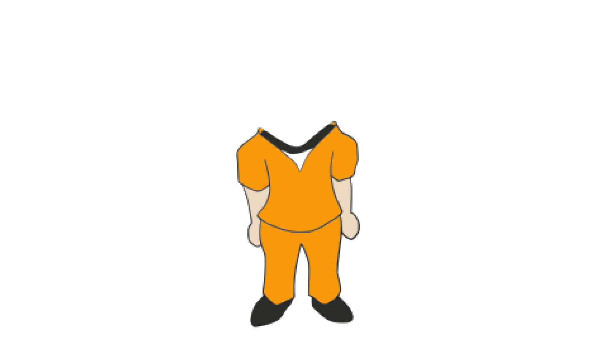
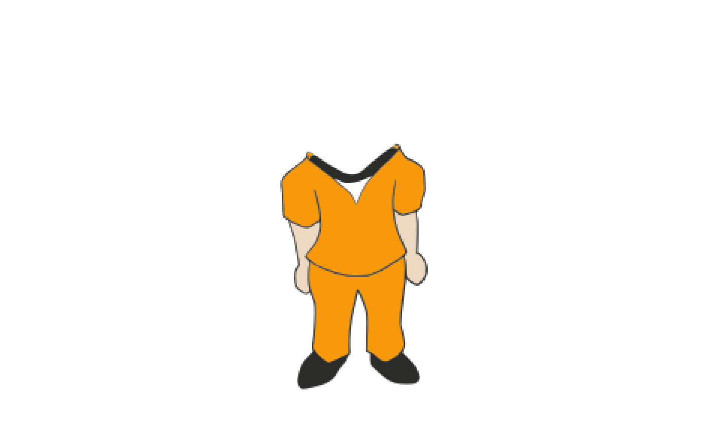

library(courtr)
library(magick)
#> Linking to ImageMagick 6.9.12.98
#> Enabled features: fontconfig, freetype, fftw, heic, lcms, pango, raw, webp, x11
#> Disabled features: cairo, ghostscript, rsvg
#> Using 4 threads
library(rsvg)
#> Linking to librsvg 2.58.0Characters can be viewed and edited through the [Edit_Figures()] function. This function will open an RShiny app that allows for the customization of characters. The available character outfits are shown below.
 

Available outfits: analyst, defendant, hazmat, inmate, judge, lawyer, police, and scientist
Available character heads are shown here: